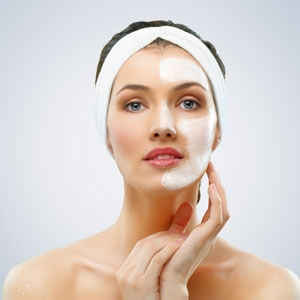
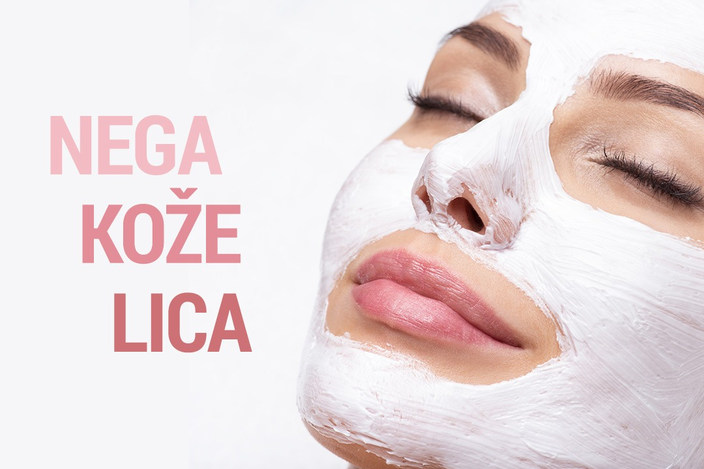

Kako bi nega bila prilagođena tipu kože lica i godinama starosti, važno je znati kakvu kožu imate. Većina ljudi smatra da dobro poznaje svoju kožu, međutim svakodnevno korišćenje krema, gelova, sredstava za čišćenje i tonika može je isušiti ili doprineti dodatnom lučenju sebuma usled čega lice postaje masnije.
 Kako bi nega kože bila adekvatna potrebno je prvo utvrditi kojem tipu kože pripada Vaša koža lica – masnoj, mešovitoj ili suvoj koži. A u tome vam može pomoći dermatolog.
Četiri osnovna koraka za zdravu i lepu kožu su:
Klikom na ISHRANA U SLUŽBI LEPOTE saznajte kako ishrana utiče na Vašu lepotu.